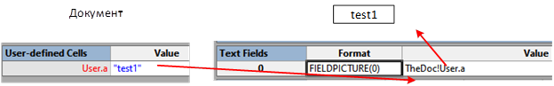

В формулах шейп-листа часто используются ссылки на другие ячейки. Ячейки того же шейпа, другого шейпа, страницы, документа. Однако, как показывает практика, такие ссылки работают не всегда. Например, в старших версиях Visio может не работать ссылка на документ.
Тестовые конструкции
Рассмотрим формулу TheDoc!User.a.
Сделаем 4 мастер-шейпа во внешнем трафарете tstDoc.vssx и исследуем поведение копий этих мастер-шейпов при опускании их на страницу рисунка. Теоретически все эти шейпы должны вести себя одинаково – передавать данные из ячейки User.a документа в текстовое поле шейпа.
Вариант 1. Одиночная ссылка
В простейшем случае она не вызывает проблем. Здесь шейп содержит поле, непосредственно ссылающееся на ячейку User.a в документе. При обновлении значения в документе сразу же обновляется текст шейпа.

Вариант 2. Двухзвенная цепочка
Усложним конструкцию. Добавим в шейп ячейку User.a и удлиним цепочку ссылок. Теперь данные документа поступают сначала в User.a шейпа и только потом в текстовое поле шейпа.

Вот и появились проблемы. При обновлении данных в документе текст шейпа не изменяется. Это ошибка, нарушающая законы ссылок в Visio.
Отложим объяснение причин и рассмотрим еще две конструкции (более сложные).
Вариант 3. Поле внутри группы
Пусть в качестве промежуточной ячейки используется не ячейка того же шейпа, а ячейка User.a группы.

В этом варианте обновление текста в шейпе тоже не происходит. Собственно вариант сильно напоминает предыдущий, только шейпов стало больше.
Вариант 4. Шейп с авторемонтом
Наконец, рассмотрим такую конструкцию

Здесь в группе задействована ячейка EventDrop, которая при опускании мастер-шейпа на страницу рисунка обновляет формулу в ячейке User.a.
Вот теперь шейп опять ведет себя так, как положено по документации – обновление данных документа сразу же проявляется в тексте шейпа.
Эксперимент
Собственно эксперимент. Перебрасываем все 4 мастера на страницу рисунка. Для начала все 4 шейпа отображают одинаковый текст (который в данный момент находится в TheDoc!User.a).

Справа показаны имена мастер-шейпов.
Теперь открываем шейп-лист документа и меняем значение ячейки User.a на test_2.

Два шейпа правильно передали новое значение данных документа, а два остались неизменными.
Рассуждения
В процессе обсуждения схожей ситуации на форуме было подмечено, что критически важно, является ли формула в промежуточной ячейке наследуемой или локальной.
В варианте 1 промежуточной ячейки вообще нет. Ссылка работает верно даже с наследуемой формулой.
В вариантах 2 и 3 промежуточная ячейка есть и формула в ней наследуемая (и на картинке она черного цвета). В этом случае цепочка передачи данных рвется. Обновление не работает.
В варианте 4 в момент опускания мастер-шейпа на страницу рисунка срабатывает функция SETF в ячейке EventDrop и прописывает в ячейку User.a ту же формулу, что и в мастер-шейпе. Но эта формула уже присутствует локально. Если посмотреть шейп-лист копии, то формула будет уже синего цвета. И это восстанавливает транспорт данных.
В принципе, отличия в поведении объяснимы. Шейп-копия просто не содержит наследуемых ячеек. Их нет в файле. Формулы для этих ячеек притягиваются из мастер-шейпов. И вот в длинных цепочках ссылок сам факт обновления теряется. Формулы нет, значит и обновления нет, а в мастер-шейпе посмотреть забыли. Напомню, что в короткой цепочке (вариант 1) обновление происходит нормально.
Другое решение 1
В процессе обсуждения на форуме предлагалось удалять мастер-шейп в трафарете документа. На первый взгляд результат похож - ссылающаяся формула тоже станет локальной. Но связь с мастер-шейпом будет потеряна и обращение к меню Shape Name покажет нам no master. Значит если пользователь когда-то захочет подправить мастер-шейп в трафарете, то изменения не проникнут в копии шейпа в документе. Останется только удалять их и заменять на копии от нового мастера.
В отличие от этого, ремонт по варианту 4 сохраняет связь с мастер-шейпом. Если, например, перекрасить мастер-шейп в трафарете документа или заменить логотип (в составе группы), то изменения будут переданы во все копии.
Другое решение 2
Предлагался также перевод формул в локальные с помощью макроса. Идея следующая. Если мы знаем, что нужные формулы сосредоточены, например, в секции User, то можем просмотреть все строки этой секции и при обнаружении наследуемых формул, обновить эту формулу. То есть выполнить в коде Formula = Formula. Оттолкнувшись от одного шейпа, можно отремонтировать и предыдущие рекурсивно по наследованию.
Программа может быть примерно такой:
Sub LocalForm()
Dim shp As Visio.Shape
Set shp = ActivePage.Shapes(1)
intCounter = shp.RowCount(242)
For i = 0 To intCounter - 1
If shp.CellsSRCExists(242, i, 0, 0) Then
Set vsoCell = shp.CellsSRC(242, i, 0)
t2 vsoCell
End If
Next
End Sub
Sub t2(ByVal cll As Visio.Cell)
If cll.Formula <> "" Then
If cll.IsInherited Then
cll.Formula = cll.Formula
acell = cll.Precedents
For intCounter = LBound(acell) To UBound(acell)
Set vsoCell = acell(intCounter)
Debug.Print cll.Name & " depends on " & vsoCell.Name & " F=" & cll.Formula
t2 vsoCell
Next
End If
Else
Debug.Print cll.Name & " no formula"
End If
End Sub
Такое решение может работать не на этапе разработки мастер-шейпов, а уже по готовым документам. Но скорее всего потребует знания программирования и более тонкой настройки. То есть приведенный пример нужно модифицировать, подгонять к конкретной задаче. Также как в основном решении, связь копий с мастер-шейпами не теряется.
Выводы
1. При разработке трафаретов следует очень осторожно применять цепочки наследования (несколько последовательных ссылок в формулах), они могут не работать.
2. Для длинных цепочек желательно предусматривать перевод наследуемых формул в локальные. Это можно закладывать в конструкцию шейпов, например с использованим SETF в событии EventDrop, или используя программные методы.
Трафарет для тестирования